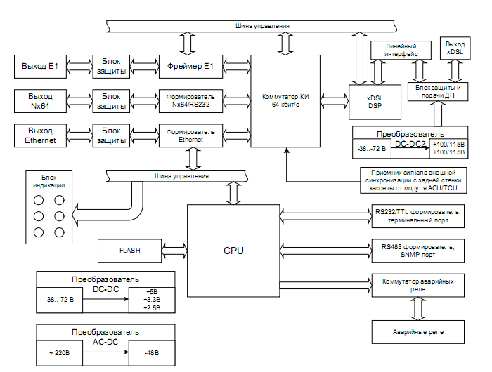

НАЗНАЧЕНИЕ, СОСТАВ, ОСНОВНЫЕ ТАКТИКО-ТЕХНИЧЕСКИЕ ХАРАКТЕРИСТИКИ И РЕЖИМЫ РАБОТЫ СИСТЕМЫ MEGATRANS-3M
Назначение системы MEGATRANS-3M
Аппаратура MEGATRANS-3M включает в себя станционное оборудование линейного окончания, линейное промежуточное регенерационное оборудование (комплекты для установки в НУП и НУПВ), вспомогательное регенерационное оборудование, оборудование передачи телеметрической информации и групповых каналов передачи данных (ПД) телеметрии и телемеханики (ТМ), а также модули контроля и управления. Пример организации тракта на оборудовании MEGATRANS-3M представлен на рисунке 1.
Станционное оборудование линейного окончания предназначено для образования линейного сигнала из цифрового потока со скоростью передачи до 2,3 Мбит/с, дополнительного цифрового канала для каналов ПД, ТМ, диспетчерской и радиосвязи, а также для организации дистанционного питания промежуточных линейных регенераторов.
Линейное промежуточное регенерационное оборудование предназначено для регенерации линейного сигнала и выделения части канальных интервалов 64 кбит/с дополнительного цифрового канала. Регенерационное оборудование устанавливается в необслуживаемых регенерационных (усилительных) пунктах (НРП (НУП) и НРПВ (НУПВ)). В состав оборудования входят контейнер НРП и модули регенератора. В зависимости от варианта исполнения, регенератор состоит из одного или двух комплектов модулей приемопередатчика и линейного интерфейса.
Оборудование передачи телеметрической информации и групповых каналов предназначено для образования и регенерации сигнала дополнительного цифрового канала из сигналов каналов ПД, ТМ, ДС и РС, а также для организации дистанционного питания вспомогательного регенерационного оборудования. Оборудование передачи телеметрической информации и групповых каналов устанавливается в ПКУ.
Модуль контроля и управления CMU, устанавливаемый в станционное оборудование, предназначен для диагностики и управления системой по протоколу SNMP. Модуль СМU собирает информацию об оборудовании, накапливает ее и, при получении соответствующего запроса, выдает на управляющий компьютер. Обмен информацией между модулем CMU и другими устройствами осуществляется по интерфейсу RS485.
Питание станционного оборудования линейного окончания осуществляется от первичного источника постоянного тока с номинальным напряжением 60В постоянного тока.
Питание оборудования передачи телеметрической информации и групповых каналов производится либо от местного источника гарантированного питания постоянного (60 В) или переменного (220 В) тока. Питание линейных регенераторов производится дистанционно от станционного оборудования линейного окончания.
Питание вспомогательного регенерационного оборудования производится дистанционно постоянным напряжением от оконечного оборудования.
Основные особенности системы MEGATRANS-3M
Система передачи MEGATRANS-3M является следующим поколением магистральных систем MEGATRANS и имеет следующие отличительные особенности, относительно предыдущих поколений систем MEGATRANS:
- Тип линейного кодирования – ТС-РАМ (РАМ-16).
- Применение новой элементной базы.
- Благодаря оптимизированному алгоритму аналоговой обработки и коррекции сигнала (АОКС), максимальная длина регенерационного участка увеличена до 26 км.
- Два дистанционно питаемых регенератора с одной стороны (или четыре при питании с двух сторон).
- Максимальная длина полусекции ДП составляет 52 км, максимальная длина тракта между обслуживаемыми пунктами – 130 км.
- Уменьшены габаритные размеры регенератора.
- Различные варианты исполнения регенераторного оборудования:
- герметичный корпус на 4 посадочных места для размещения оборудования регенерации на две системы передачи (два регенератора в одном корпусе, против одного в предыдущих системах);
- корпус класса IP-67 для размещения комплекта регенераторного оборудования на одну систему.
- Возможность выделения-вставки части канальных интервалов в точке регенерации через интерфейс Е1 или xDSL.
- Возможность подключения трех датчиков «сухих контактов» при использовании одной системы и пяти датчиков, при использовании двух систем в одном конструктиве.
- Возможность организации каналов диспетчерской связи, каналов радиосвязи и канала передачи данных для оборудования телеметрии и телемеханики и доступом к вышеперечисленным каналам на каждом ПКУ.
- Общая система управления всех блоков системы.
- Возможность программного понижения уровня передачи для улучшения спектральной совместимости с аналоговыми системами в случае «врезки» системы MEGATRANS-3M на участке между двумя НУП системы К-60.
- Организация транзитного управления через ОУП и централизованная система управления.
Состав оборудования
Таблица 1 - Состав оборудования
| Станционное оборудование | |
|---|---|
| MGS-3M-MRL-E1B/Eth | Модуль MEGATRANS-3M, MiniRack, LTU, 1*xDSL, без АОКС, 1*E1 120 Ом, ЛП/ДП, в комплекте с кабелем питания, кабелем Ethernet, разъемом для кабеля G.703 и кабелем DSL. |
| MGS-3M-SRL-E1B/Eth | Модуль MEGATRANS-3M, SubRack, LTU, 1*xDSL, без АОКС, 1*E1 120 Ом, ЛП/ДП, в комплекте с разъемом для кабеля G.703 и кабелем DSL. |
| MGS-3M-ASP | Модуль АОКС для установки на модуль MGS-3M-MRL-E1B/Eth или MGS-3M-SRL-E1B/Eth. |
| Регенераторное оборудование | |
| MGS-3-CASE-IP2 | Влагозащищенный корпус регенератора класса IP-67 для оборудования MEGATRANS-3M(3L). 2 посадочных. |
| MGS-3M-RG-XCVR-E | Плата приёмопередатчика для установки в регенератор MEGATRANS-3M, 2*xDSL, 1*E1 120 Ом ADD-DROP, REMO, прием ДП. |
| MGS-3-CASE-ST | Стальной герметичный корпус для регенераторов FlexDSL или MEGATRANS-3M(3L), на 4 платы. |
| MGS-3M-RG-LIU | Плата линейного интерфейса для установки в регенератор MEGATRANS-3M, АОКС, подключение датчиков «сухих контактов». |
Система состоит из двух комплектов модулей для установки в ОУП и регенераторов. Модули для установки в ОУП в исполнении Sub-Rack размещаются в модульной кассете. Модули в исполнении MiniRack размещаются в 19”стойке или шкафу. В комплект оборудования для передачи одного потока Е1 для ОУП входят:
- модульная кассета FG-R-PCM/W-E (FG-R-W-E) для размещения в ней модулей системы;
- плата приемопередатчика MGS-3M-SRL-E1B/ETH или модуль приемопередатчика MGS-3M-MRL-E1B/ETH;
При необходимости на плату приёмопередатчика устанавливается модуль АОКС MGS-3M-ASP. Регенератор представляет собой герметичный корпус MGS-3-CASE-ST или влагозащищенный корпус регенератора класса IP-67 MGS-3-CASE-IP2, в который устанавливается комплект из платы приемопередатчика MGS-3M-RG-XCVR-E и платы линейного интерфейса MGS-3M-RG-LIU.При необходимости (при организации передачи двух потоков) в корпус MGS-3-CASE-ST может быть установлен второй комплект плат.
Технические характеристики
Характеристики линейного стыка
Таблица 2 - Характеристики линейного стыка
| Параметр | Значение | Примечание |
|---|---|---|
| Стандарт (кодирование PAM) | ITU-T G.991.2; ETSI TS 101 524 | |
| Рекомендуемый диаметр жилы кабеля | 0,9 - 1,2 мм (ЗКП1х4х1,2; МКС1х4х1,2 и МКС4х4х1,2) | Возможно применение на любых симметричных кабелях связи |
| Число пар | 2 | |
| Спектральная плотность выходного сигнала (дБ/Гц) в рабочей полосе частот, не более | Согласно стандарту передачи | |
| Спектральная плотность выходного сигнала вне рабочей полосы частот | Согласно стандарту передачи | |
| Характеристика импеданса | Согласованная с кабелем марки МКСБ-4х4х1,2 | Возможна настройка под любой тип кабеля |
| Физическая модель линии | Cоответствует участку кабеля МКСБ 4 × 4 × 1,2 с затуханием 64 дБ на частоте 250 кГц. |
Описание оборудования
Модули приемопередатчика MGS-3M-MRL-E1B/ETH и MGS-3M-SRL-E1B/ETH
Модуль приемопередатчика предназначен для преобразования цифрового потока до 2304 кбит/с в линейный сигнал xDSL для последующей передачи по двухкабельной линии связи. Также, модуль приемопередатчика осуществляет дистанционное питание регенераторов.
На рис. 2 представлена блок-схема модуля приемопередатчика. Устройство состоит из следующих функциональных блоков:
- гмикропроцессора с программным обеспечением (CPU, Flash);
- интерфейса управления (RS232/TTL, RS485 – только для модулей SubRack);
- вторичного источника электропитания (DC-DC);
- первичного источника электропитания (AC-DC) (для модулей MiniRack);
- источника дистанционного питания (для модулей LTU);
- двух сетевых интерфейсов (Фреймер E1, Формирователь Nx64/RS232, Блок Защиты);
- кросс-коммутатора канальных интервалов 64 кбит/с;
- процессора цифровой обработки сигнала (DSP);
- линейного интерфейса.
Блок микропроцессора (CPU) осуществляет управление всеми функциональными блоками модуля в соответствии с программным обеспечением и установленными параметрами.
Установка параметров работы, переключение режимов и контроль состояния системы возможны через интерфейс управления (RS232) с помощью терминала типа VT100. Через интерфейс управления также осуществляется загрузка программного обеспечения, в случае необходимости.
Модули типа SubRack имеют второй интерфейс управления RS485. Этот интерфейс используется для обмена информацией между модулем FlexDSL и модулем FlexGain CMU при работе в составе сложных сетей под единой системой централизованного сетевого управления (SNMP).
Питание модуля осуществляется от встроенного DC-DC конвертера напряжениями 2.5B, 3.3В и 5В. Диапазон входных напряжений вторичного источника электропитания -38 … -72 В.

Для организации дистанционного питания регенераторов в модуле предусмотрен блок источника ДП DC-DC2.
В модулях в исполнении MiniRack имеется также блок AC-DC конвертера для преобразования напряжения сети 220 В переменного тока в постоянное напряжение – 48 В для питания DC-DC конвертера.
Блок специализированного сигнального процессора (DSP) обеспечивает дуплексное преобразование данных, поступающих с сетевого интерфейса, в поток xDSL. При этом блок сигнального процессора обеспечивает:
- генерацию структуры цикла xDSL (слов синхронизации, циклов CRC-6 и пр.) и заполнение ее данными сетевых интерфейсов;
- выравнивание синхронизации между внутренней шиной данных устройства и передачей в линии (т.е. управление алгоритмом стаффинга);
- выработку сигналов управления для блока линейного интерфейса.
Помимо вышеперечисленных функций, блок DSP осуществляет управление процессом установления связи в линии и цифровую обработку сигнала, поступающего из линии.
Блок линейного интерфейса производит цифро-аналоговое и аналого-цифровое преобразование данных, а также обеспечивают аналоговую фильтрацию и усиление сигналов. Блок линейного интерфейса содержит:
- блоки АЦП и ЦАП;
- выходной аналоговый фильтр/усилитель мощности линейного сигнала;
- входной усилитель-фильтр/эхокомпенсатор;
- цепи согласования импеданса и гальванической развязки с линией;
- устройства подавления электромагнитных помех.
При необходимости в приёмный тракт блока линейного интерфейса включается блок АОКС, выполненный в виде отдельного модуля (MGS-3M-ASP).
Сформированный в блоке линейного интерфейса аналоговый сигнал проходит через блок защиты и поступает на контакты xDSL-разъема. В блоке защиты предусмотрена возможность «добавления» к информационному сигналу дистанционного питания.
Сетевой интерфейс соединён с сигнальным процессором через блок кросс-коммутатора.
Фреймер Е1 осуществляет:
- преобразование цифрового потока данных от кросс-коммутатора в поток E1 с линейным кодом HDB3;
- генерацию структуры цикла G.704 (слов синхронизации, циклов CRC-4 и пр.).
Формирователь Nx64/RS232 осуществляет:
- преобразование скорости потока данных, в зависимости от установленных скоростей передачи по сетевому и линейному стыку;
- прием/генерацию сигналов линий управления Nx64.
Блок кросс-коммутации осуществляет отображение канальных интервалов 64 кбит/с от сетевого интерфейса на цифровой поток xDSL.
Режим работы можно изменять с управляющего компьютера, подключенного к разъему управления модуля (для модулей в варианте исполнения MiniRack) или к модулю FG-ACU-SR или FG-TCU-SR, расположенных в той же модульной кассете (для модулей в варианте исполнения SubRack). Также, существует возможность изменять режим работы удалённого модуля, при условии наличия синхронизации в линии. Режимы ДП изменяются при помощи перемычек, расположенных на плате модуля приемопередатчика.
Включение режима ДП осуществляется установкой перемычек J1107 и J1108. Помимо этого, перемычки J1111 - J1114 переключают режим дистанционного питания. Существуют два режима дистанционного питания: 115 В и 200 В. В режиме 115 В устройство может обеспечить дистанционное питание одного регенератора. В режиме 200 В устройство может обеспечить дистанционное питание двух регенераторов.
Таблица 3 - Характеристики режимов дистанционного питания
| Характеристика | Значение |
|---|---|
| Напряжение дистанционного питания на выходе модуля в режиме 115 В | (115 +/- 3) В |
| Напряжение дистанционного питания на выходе модуля в режиме 200 В | (200 +/- 15) В |
| Порог ограничения тока ДП: | (60 +/- 2) мА |
В режиме дистанционного питания, включение/выключение дистанционного питания производится командой POWER ON/OFF.
Перемычки (J1111, J1112, J1113 и J1114) переключают режим источника дистанционного питания: 115 В и 200 В:
Таблица 4 - Конфигурация источника ДП
| Функция | Перемычка | Состояние |
|---|---|---|
| Включение источника ДП в режим 115 В | J1111 В | Замкнуто |
| J1112 В | Разомкнуто | |
| J1113 В | Разомкнуто | |
| J1114 В | Разомкнуто | |
| Включение источника ДП в режим 200 В | J1111 В | Разомкнуто |
| J1112 В | Замкнуто | |
| J1113 В | Замкнуто | |
| J1114 В | Замкнуто |
Режим дистанционного питания MEGATRANS-3M имеет следующие отличительные особенности:
- безопасное напряжение в проводе относительно земли (<120 В);
- управляемое микроконтроллером ограничение тока ДП (60 мА);
- устойчивость к микропрерываниям;
- автоматический перезапуск системы после сбоев по цепи ДП;
- защита в соответствии с ITU-T K.20/K.21/К.17.
Линейный стык xDSL.
Описанные ниже режимы относятся к линейной части устройства, состоящей из DSP и блока линейного интерфейса.
Режим Master/Slave (Ведущий/Ведомый)
Для установления связи между двумя модулями необходимо, чтобы модуль, расположенный на головном ОУП, работал в режиме Master, а модуль, расположенный на оконечном ОУП, работал в режиме Slave. При этом процедура установления связи контролируется модулем Master.
Выбор режима работы Master/Slave производится командой MASTER ON/OFF.
Режим Аutorestart (Автоперезапуск)
Данная опция разрешает или блокирует автоматический перезапуск процедуры установления связи в линии согласно рекомендации ITU-T G.991.2, по которой автоматический перезапуск производится через 2 с после пропадания связи.
Включение/выключение режима Autorestart производится командой AUTORST ON/OFF. Рекомендуется всегда включать данный режим.
Режим ANNEX
Существует три режима работы (выбираются командой ANNEX):
- ANNEX A – работа в соответствии с ITU-T G.992.1 ANNEX A,
- ANNEX B – работа в соответствии с ITU-T G.992.1 ANNEX B,
- ANNEX AB – режим автоматического выбора: режим определяется установкой ANNEX удаленного xDSL интерфейса. Если удалённый интерфейс также находится в автоматическом режиме, то связь будет установлена в соответствии с ITU-T G.992.1 ANNEX A.
Режим Rate Adaption (Автоматического подбора скорости)
При включении данного режима на модуле Master система автоматически выберет максимально возможную скорость работы на сегменте между модулем Master и первым регенератором, при котором соотношение сигнал-шум в линии будет больше 25 дБм.
Включение/выключение режима Rate Adaptation производится командой ADAPT ON/OFF.
Если режим Rate Adaptation выключен, система установит скорость в линии согласно установке BASERATE модуля Master.
Режим SCALE
В устройстве предусмотрена возможность программной регулировки выходного уровня передатчика командой SCALE в диапазоне от -16 до +2 дБ от номинального значения (+13,5 дБм для ANNEX A; +14,5 дБм для ANNEX B).
Сетевой стык E1 (2 Мбит/c G.703/G.704)
Описанные ниже режимы работы относятся к блоку сетевого интерфейса E1.
Режимы Transparent (прозрачный)/ ITU-T G.704 (кадрирование по MCЭ-T G.704)
В режиме Transparent (команда G704) поток Е1 передается без каких-либо изменений. Опция CRC4 недоступна. Прозрачный режим возможен только для скорости передачи в линии 2056 кбит/с или более (при установлении связи на скорости ниже, чем 2056 кбит/с выводится предупреждение в таблице конфигурации) и в случае отсутствия передачи данных через интерфейс Nx64/RS232.
В режиме G.704 поток данных Е1 обрабатывается фрэймером потока Е1, расположенным в блоке сетевого интерфейса Е1.
Выбор режимов Transparent/ITU-T G.704 производится командой G704 OFF/ON.
Режим CRC4 (контроль с использованием циклического избыточного кода), опция CRC4 (детектирование и генерация подсверхциклов CRC4).
Если данный режим активен (команда CRC4), фрэймер Е1 синхронизируется по CRC4-подсверхциклам и выдает информацию о CRC-ошибках, а также регенерирует КИ 0 в исходящем потоке (т.е. регенерирует CRC4-подсверхциклы и слова контрольных сумм в исходящем потоке Е1).
Если режим выключен, фрэймер Е1 синхронизируется только по кадрам и не выдает информацию о CRC-ошибках.
Если данный режим выключен, КИ 0 (в т.ч. интернациональные биты) передается прозрачно!
В независимости от выбора режима CRC4 интернациональные (Sa) и А-биты передаются прозрачно.
Режим E-bit insertion (управление битами Е)
Если данная функция активна, то обнаруженные во входящем потоке Е1 ошибки CRC4 будут вызывать соответствующее изменение бита Е в исходящем потоке Е1.
Если данная функция не активна, то биты Е устанавливаются в 1. Данный режим возможен только при включенном режиме CRC4.
Включение/выключение режима E-bit insertion производится командой EBIT ON/OFF.
Режим AIS Generation (генерация сигнала AIS)
Если данный режим разрешен, сигналы AIS будут выдаваться в сторону Е1 при следующих условиях:
- отсутствует линейный сигнал от удаленного модуля или потеряна кадровая синхронизация в линейной части;
- удаленный модуль посылает сигнал AIS.
Включение/выключение режима AIS Generation производится командой AISGEN ON/OFF
Режим AIS Detection (детектирование сигнала AIS)
Если данный режим включен, получение сигнала AIS на стыке Е1 вызовет следующие события:
- появление сигнала несрочной аварии;
- передача сигнала AIS на удаленный модуль.
Включение/выключение режима AIS Detection производится командой AISDET ON/OFF
Сетевой стык Nx64 (V.35/V.36/X.21/V.28/RS232)
Описанные ниже режимы работы относятся к блоку сетевого интерфейса Nx64 (V.35/V.36/X.21/V.28/RS232) .
Режим Interface Type (тип интерфейса)
Сетевой стык Nx64 может функционировать в одном из следующих режимов (команда TYPE):
- V.35, скорость 64-2304 кбит/с;
- V.36/X.21 without termination (без нагрузочного сопротивления), скорость 64 … 2304 кбит/с;
- V.36/X.21 with termination (с нагрузочным сопротивлением), скорость 64 … 2304 кбит/с;.
- V.28 (синхронный), скорость 64,128 и 192 кбит/с.
- RS232 (асинхронный), скорость 110 … 115200 бит/с
Модем с сетевым интерфейсом Nx64 является устройством DCE. Оконечное оборудование может быть как DTE, так и DCE. Для подключения к оконечному оборудованию используется кабель соответствующего типа.
Режим Bitrate (скорость передачи данных по стыку Nx64, кроме RS232).
Скорость передачи по порту Nx64 (команда BITRATE) может быть выбрана из диапазона 64 … 2304 кбит/с с шагом 64 кбит/с (т.е. n=1…36). В режиме V.28 n=1, 2 или 3, т.е. скорость может составлять 64, 128 или 192 кбит/с.
Режимы Clockmode и Clockdir (режимысинхронизации, кроме RS232)
Режим синхронизации должен быть установлен в зависимости от индивидуальной конфигурации сети. Сеть должна иметь только один источник синхронизации.
Возможна синхронизация от оконечного оборудования (External) или внутренняя (Internal) (команда CLOCKMODE). В режиме Nx64 & fE1 синхронизация осуществляется от входящего потока Е1. Модуль Slave всегда находится в режиме синхронизации Remote (от удалённого модуля).
Тип стыка (сонаправленный – Codirectional или противонаправленный - Contradirectional) устанавливается программно (команда CLOCKDIR). Если модуль установлен в режим External или подключен к устройству DCE, то возможен только сонаправленный (Codirectional) режим работы.
Устройство автоматически определяет полярности сигнала синхронизации передаваемых данных: Normal (стандартная, согласно ITU-T V.24)/Inverted (обратная стандартному).
Линии управления Nx64.
Линии управления V.35/V.36
Линия 107 модуля Master всегда находится в состоянии «ЗАМКНУТО». Линия 107 модуля Slave всегда находится в состоянии «ЗАМКНУТО», за исключением режима LOOP2. Линии 109 и 106 находятся в состоянии «РАЗОМКНУТО», если отсутствует связь в линии xDSL. Если связь присутствует, то линия 109 находится в состоянии «ЗАМКНУТО», а линия 106 имеет то же состояние, что и линия 105. Линия 142 находится в состоянии «ЗАМКНУТО», если установлен какой-либо из технологических шлейфов.
Линии управления X.21
Линия I находится в состоянии «РАЗОМКНУТО», если отсутствует связь в линии xDSL. Если связь присутствует, то линия I имеет то же состояние, что и линия C.
Линии управления V.28 и RS232
Состояние сигналов 105 и 108 не анализируется. Сигналы 109, 107 и 106 включены, если связь по DSL интерфейсу установлена. Иначе – выключены.
Шлейфы согласно V.54 (кроме V.28 и RS232)
Система поддерживает автоматическую установку диагностических шлейфов согласно ITU-T V.54. Данный режим может быть разрешён или запрещен командой AUTOLOOP ON/OFF.
Если режим автоматической установки включён, то переход линии 141 в состояние «ЗАМКНУТО» приводит к установке режима LOOP1, а переход линии 140 модуля
Master в состояние «ЗАМКНУТО» приводит к установке режима LOOP2.
Режим Slotusage (использование КИ0 для передачи данных Nx64)
В конфигурациях типа E1-Nx64 КИ 0 xDSL используется для передачи КИ 0 потока Е1. В конфигурациях типа Nx64-Nx64 КИ 0 может использоваться для передачи данных Nx64. Переключение между этими режимами осуществляется командой SLOTUSAGE OFF/ON, соответственно. При этом если КИ 0 не используется для передачи данных Nx64, то скорость в линии должна быть, по крайней мере, на 64 кбит/с больше, чем по стыку Nx64.
Сетевой стык RS232
Описанные ниже режимы работы относятся к блоку сетевого интерфейса RS232.
Передача данных RS232
Скорость передачи через интерфейс RS232 может составлять 110, 150, 300, 600, 1200, 2400, 4800, 9600, 14400, 19200, 28800, 38400, 57600 и 115200 бит/с (выбирается командой RS232RATE [n], где N – скорость передачи данных в бит/с, а команда RS232ERATE [n] – задает превышение скорости передачи над скоростью приема, где N принимает следующие значения: 1 – 0%, 2 – 0.5%, 3 – 1%, 4 – 2%).
Для корректной работы асинхронного последовательного интерфейса необходимо, чтобы скорость передачи данных из модема была не меньше скорости передачи данных их источником.
Система также позволяет выбрать номер КИ для передачи данных RS232 командой RS232SLOT [n]. Если скорость на этом интерфейсе 57600 бит/с или менее, занимается один КИ. При скорости 115200 бит/с занимается два КИ: n и n+1.
Описанные ниже режимы работы относятся к блоку сетевого интерфейса Nx64 (V.35/V.36/X.21/V.28/RS232) .
Количество бит данных в одном кадре (между стартовым и стоповым битами) на интерфейсе RS232, может составлять от 7 до 10 бит (команда RS232BITS [n]).
Проверка на четность/нечетность не поддерживается, бит четности передается, как бит данных. Второй стоп-бит также передается, как бит данных.
Сетевой стык Ethernet
Сетевой стык Ethernet представляет из себя коммутатор, один вход которого соединен с линейным сетевым стыком, другой выведен на переднюю панель
Коммутатор работает по принципу «store-and-forward», обеспечивая таким образом согласование скоростей и фильтрацию поврежденных кадров. Модуль может автоматически выбирать режим работы сетевого стыка Ethernet. Согласно рекомендациям IEEE 802.3u модуль определяет скорость работы сети Ethernet (10/100 Мбит/c), а так же режим дуплекса (полный или полудуплекс). Имеется возможность ручной установки этих параметров (команда ETHSD). Также автоматически определяется тип используемого кабеля (параллельный или перекрестный).
Информация из коммутатора Ethernet помещается в канальные интервалы кадра DSL согласно установленному порядку передачи данных и выбранному количеству занимаемых КИ для Ethernet (команда ETHPAYLOAD). Скорость передачи данных Ethernet через линейный сетевой стык может быть от 64 кбит/c до 2304 кбит/с, пропорционально количеству занимаемых КИ.
Режимы порядка передачи данных
Порядок расположения данных с различных интерфейсов в кадре DSL задается командой SERVICE.
Режим E1 only (передача только канальных интервалов потока E1 – базовый режим)
В данном режиме осуществляется передача только канальных интервалов потока E1. Включение данного режима осуществляется командой SERVICE E.
Канальные интервалы потока Е1 предаются в xDSL-кадре согласно рекомендации ITU-T G.991.2. При этом в режиме PCM31 все КИ обрабатываются как КИ с данными.
Ниже представлена таблица соответствия скоростей передачи данных модема и передаваемых канальных интервалов потока E1 в режиме PCM31.
Таблица 5 - Таблица отображения КИ потока E1 на поток xDSL в режиме PCM31
| Число канальных интервалов потока E1 | Скорость передачи в линии,кбит/с | Передаваемые канальные интервалы потока E1 | Передаваемые канальные интервалы xDSL |
|---|---|---|---|
| 3 | 200 | 0 1 2 | 0 1 2 |
| 4 | 264 | 0 1 2 3 | 0 1 2 3 |
| ●●●●● | ●●●●● | ●●●●● | ●●●●● |
| ●●●●● | ●●●●● | ●●●●● | ●●●●● |
| 31 | 1992 | 0…30 | 0…30 |
| 32 | 2056 | 0…31 | 0…31 |
В режиме PCM30 номер КИ, в котором будет передаваться сигнальная информация через линейный сетевой интерфейс (DSL) и через интерфейс E1, может задаваться (командой SIGSLOTS) как вручную, так и в автоматическом режиме. В последнем случае сигнальный КИ помещается в КИ16 DSL при скорости передачи в линии больше 1096 кбит/с и в последний доступный КИ DSL, при скорости передачи в линии меньше 1096 кбит/с.
Ниже представлена таблица соответствия скоростей передачи данных модема и передаваемых канальных интервалов потока Е1 для режима PCM 30 и автоматической расстановки сигнальных КИ.
Таблица 6 - Таблица отображения КИ потока E1 на поток xDSL в режиме PCM30
| Число канальных интервалов потока E1 | Скорость передачи в линии,кбит/с | Передаваемые канальные интервалы потока E1 | Передаваемые канальные интервалы xDSL |
|---|---|---|---|
| 3 | 200 | 0 1 16 | 0 1 2 |
| 4 | 264 | 0 1 2 16 | 0 1 2 3 |
| ●●●●● | ●●●●● | ●●●●● | ●●●●● |
| ●●●●● | ●●●●● | ●●●●● | ●●●●● |
| 16 | 1032 | 0…14 16 | 0…14 15 |
| 32 | 1096 | 0…16 | 0…16 |
| ●●●●● | ●●●●● | ●●●●● | ●●●●● |
| ●●●●● | ●●●●● | ●●●●● | ●●●●● |
| 16 | 1992 | 0…30 | 0…30 |
| 32 | 2056 | 0…31 | 0…31 |
Режим Nx64 only (передача только синхронного потока данных)
В данном режиме осуществляется передача только синхронного потока данных, поступающего на сетевой стык Nx64. Включение данного режима осуществляется командой SERVICE N.
Данные с сетевого стыка Nx64 отображаются на xDSL-кадр, начиная с КИ0 (SLOTUSAGE ON) или с КИ1 (SLOTUSAGE OFF). В конфигурациях системы типа Nx64-Nx64 рекомендуется использовать режим SLOTUSAGE ON, а в конфигурациях типа E1-Nx64 рекомендуется использовать режим SLOTUSAGE OFF. Ниже приведена таблица отображения данных Nx64 на поток xDSL.
Таблица 7 - Таблица отображения данных Nx64 на поток xDSL

Режим Ethernet only (передача только потока данных Ethernet)
В данном режиме передаются только данные, поступающие на сетевой стык Ethernet. Данные с сетевого стыка Ethernet отображаются на xDSL-кадр, начиная с КИ0 DSL (SLOTUSAGE ON) или с КИ1 DSL (SLOTUSAGE OFF). Данный режим выбирается командой SERVICE ETH.
Таблица 8 - Таблица отображения данных Ethernet на поток xDSL

Режим Multiservice
В данном режиме одновременно передаются КИ Е1 c интерфейса G.703, данные с интерфейсов Nx64 и Ethernet. Порядок распределения КИ с различных интерфейсов в кадре DSL определяется порядком их расположения в параметрах команды SERIVCE, за исключением режима передачи RS232 через интерфейс Nx64.
В общем случае для команды вида SERVICE I1,I2,I3,I4 порядок распределения данных изображен на рис. 4.
Распределение данных с интерфейсов в кадре DSL происходит по следующим правилам:
- Если используется интерфейс E1 и включен режим PCM30, то размещается сигнальный КИ, согласно установкам SIGSLOTS.
- Под данные с Nx64 и Ethernet отводится такое количество КИ, которое указано в параметрах BITRATE и ETHPAYLOAD. При размещении учитывается значение параметра SLOTUSAGE. В случае использования Nx64 в режиме передачи RS232 будут зарезервированы один или два КИ согласно параметрам RS232SLOT и RS232RATE.
- В оставшиеся свободные КИ помещаются данные из соответствующих КИ с интерфейса G.703. В КИ0 кадра DSL всегда помещается КИ0 c интерфейса G.703, если этот интерфейс указан в параметрах команды SERVICE.
- КИ из интерфейса G.703 выше КИ31 располагаться не могут, кроме случая передачи неструктурированного потока E1.
- Если остались пустые КИ, то они заполняются константой 0xFF
Пример 1 (размещение данных в кадре DSL с нескольких интерфейсов)
Порядок размещения данных с интерфейсов: SERVICE N,ETH
Настройки Nx64: TYPE 0; SLOTUSAGE ON; BITRATE 5;
Настройки Ethernet: ETHPAYLOAD 7;
Настройки линейного интерфейса: BASERATE 12
Пример 2 (размещение КИ для RS232 и размещение пустых КИ)
Порядок размещения данных с интерфейсов: SERVICE N,ETH
Настройки Nx64: TYPE 4; SLOTUSAGE ON; RS232SLOT 5; RS232RATE 9600
Настройки Ethernet: ETHPAYLOAD 7;
Настройки линейного интерфейса: BASERATE 12
Пример 3
Порядок размещения данных с интерфейсов: SERVICE N,E
Настройки Nx64: TYPE 0; BITRATE 4;
Настройки E1: Transparent
Настройки линейного интерфейса: BASERATE 36
Пример 4
Порядок размещения данных с интерфейсов: SERVICE E,N
Настройки Nx64: TYPE 0; BITRATE 8;
Настройки E1: PCM 30, SIGSLOTS 31,16;
Настройки линейного интерфейса: BASERATE 36
Пример вариантов использования модемов в режиме Multiservice:
- КИ 0 = КИ 0 Е1; КИ 1..m (минуя сигнальный КИ) = данные Nx64; сигнальный КИ, m+1..n-1 = КИ Е1.
- КИ 0 = КИ 0 Е1; КИ 1..m (минуя сигнальный КИ) = данные Nx64; сигнальный КИ, m+1..n-1 = КИ Е1.
Режимы диагностики.
Технологические шлейфы.
Технологические шлейфы могут быть установлены как для модуля Master, модуля Slave, так и для регенератора. При этом для модуля Slave LOOP1 может устанавливаться локально, LOOP2 – локально или удаленно с модуля Master. Для регенератора LOOP1 и LOOP2 может устанавливаться как локально, так и удаленно с модуля Master, при этом светодиоды NE регенератора и FE («1») Master-модуля горят желтым светом.
Технологические шлейфы LOOP1 и LOOP2 устанавливаются / снимаются командами LOOP1(2), соответственно. Analog Loopback (функция аналогового шлейфа).
Функция аналогового шлейфа используется для диагностического тестирования оборудования в режиме Master. Для проведения этого теста необходимо выключить ДП, отсоединить кабель подключения к линии, а в разъем xDSL вставить технологическую заглушку (объединить направления приема и передачи). Тестовая процедура должна быть запущена с помощью команды STARTAL.
Во время аналоговой тестовой процедуры xDSL-приемник получает сигнал от своего собственного передатчика. Все данные, поступающие на сетевой интерфейс, должны возвращаться обратно согласно настройкам интерфейса.
Данный режим вызывает сигнализацию о несрочной аварии.
Контроль ошибок и качества соединения.
Передача в линии xDSL контролируется двумя различными способами. Контроль качества соединения необходим при инсталляции и в процессе эксплуатации, а контроль ошибок по ITU-T G.826 – для оценки работы линейного тракта в процессе эксплуатации и во время приемо-сдаточных испытаний. См. также описание команд управления SQ и G826.
Контроль качества соединения.
Контроль качества соединения производится по параметру SNR (signal-to-noise ratio – соотношение сигнал шум), возвращаемому командой SQ. Данный параметр вычисляется согласно G.991.2 и является эффективным инструментом определения устойчивости xDSL-соединения.
При пусконаладочных работах рекомендуется выбирать линейную скорость или подбирать кабельные пары (при жёстко заданной линейной скорости) таким образом, чтобы значение SNR было больше 25 дБм.
Уровень SNR в 25 дБм при наличии гауссовского шума в линии соответствует вероятности битовых ошибок 10-7.
Контроль ошибок по G.826.
Контроль качества организованного цифрового канала осуществляется по параметрам G.826. Контроль ошибок по G.826 основан на методе проверки избыточным циклическим кодом.
Генерация избыточных циклических кодов производится отдельно для Е1- и xDSL-интерфейсов.
Для потока Е1 четыре тестовых (CRC4) бита генерируются в каждом подсверхцикле и сравниваются с соответствующими битами последующего подсверхцикла. Если они не совпадают, то счетчик CRC4-ошибок увеличивает свое значение. Модуль передает информацию об ошибке путем выставления бита Е в исходящем потоке Е1. В то же время Е-биты со стороны оборудования, подключенного к модулю, подсчитываются и могут быть использованы для контроля. Для Е1 подсчет согласно рекомендации G.826 возможен только в режиме кадрирования по G.704 при включеном режиме CRC4. Если же данные режимы выключены, то могут быть обнаружены только ошибки цикловой синхронизации.
В xDSL-интерфейсе шесть тестовых (CRC6) битов генерируются для каждого xDSL-кадра.
Алгоритмы G.826 не позволяют проводить оценку коэффициента битовых ошибок.
Для просмотра статистики G.826 используются команды G826 и G826 E1.
Журнал событий History.
Модуль в процессе работы ведет подсчет статистики возникающих аварий и ошибок. В памяти устройства хранится и может отображаться следующая информация для каждого из интерфейсов отдельно:
- количество аварий за всё время работы модуля, а так же время первой и последней аварии для каждого типа аварий;
- отображение статистики G.826 за последние 24 часа с интервалами 15 минут;
- отображение статистики G.826 за последние 7 дней с интервалами в 1 день.
Для удобства использования журнала в модуле реализован таймер. При включении питания необходимо установить текущую дату и время для корректного отображения статистики.
Описание светодиодов и аварийной сигнализации.
Светодиоды.
Для контроля режима работы модуля и идентификации аварийных состояний используются два светодиода:
- NE – светодиод индикации состояния локального модуля;
- FE – светодиод индикации состояния удаленного модуля.
Каждый светодиод может светиться зеленым, оранжевым, красным светом или мигать в зависимости от состояния модуля. Ниже приведены таблицы возможных состояний светодиодов модуля для разных режимов работы:
Таблица 9 - Расшифровка состояний светодиодов

Аварийная сигнализация
Аварийная сигнализация предусмотрена при возникновении следующих событий:
Срочная авария (свечение красным светом):
- сбой в работе аппаратного или программного обеспечения (мигание светодиода);
- потеря сигнала / синхронизации кадров xDSL (LOS/LFA);
- уровень блоковых ошибок в линии согласно G.826 ≥30 (BER-H);
- перегрузка источника дистанционного питания, например, в результате короткого замыкания шлейфа (SC).
Несрочная авария (свечение желтым светом):
- потеря сигнала Е1 (LOS-S);
- потеря синхронизации кадров Е1 (LFA-S);
- потеря сигнала DTR на сетевом стыке Nx64 кбит/с (DTR);
- получение сигнала AIS от удаленного модуля (AIS-R);
- получение сигнала AIS по Е1 (AIS-S);
- установлен технологический шлейф;
- уровень блоковых ошибок в линии согласно G.826≥15% (BER-L);
- отсутствует подключение к сети Ethernet.
Срочная авария имеет приоритет над несрочной, т.е. красное свечение светодиода "перекрывает" желтое.
Состояние светодиода FE на модуле Master дублируе состояние светодиода NE модуля Slave.
При возникновении любого аварийного состояния активируется соответствующее реле аварийной сигнализации, которое может быть отключено командой АСО ON.
Конструкция.
Модуль приёмопередатчика выпускается в двух вариантах конструктивного исполнения:
- SubRack (MGS-3M-SRL-E1B/ETH) – модуль для установки в 19”кассету FlexGain;
- MiniRack (MGS-3M-MRL-E1B/ETH)– одиночный модуль высотой 1U (44,5 мм) для монтажа в 19”стойку.
MGS-3M-SRL-E1B/ETH
С конструктивной точки зрения модуль MGS-3M-SRL-E1B/ETH представляет собой комплект, состоящий из печатной платы и передней панели.
Таблица 10 - Описание разъемов и средств индикации модуля MGS-3M-SRLE1B/ETH

MGS-3M-MRL-E1B/ETH.
С конструктивной точки зрения модуль MGS-3M-MRL-E1B/ETH представляет собой корпус из нержавеющей стали, в котором смонтированы основные элементы устройства.
Таблица 11 - Описание разъемов и средств индикации модуля MGS-3M-MRLE1B/ETH